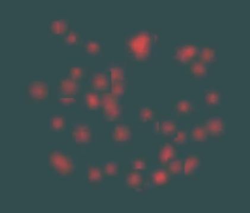
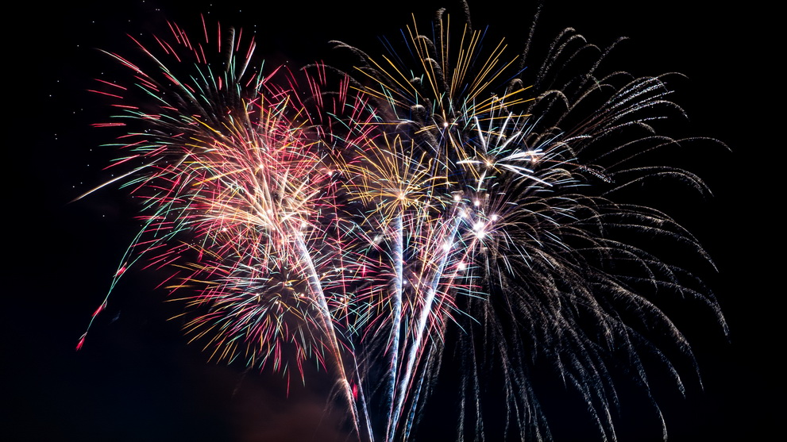

At the milestone, we have gotten to a comfortable place with our progress. We have done many tutorial on OpenGL from learnopengl.com and opengl-tutorial.com and have gotten comfortable with OpenGL. We have managed to produce particles that resemble fireworks. For the inital work on the firework, we divided it into two sections: the initial shooting of the firework and the explosion. The program so far shows both sections of the firework. So far the program is run using OpenGL, glad, glfw, glm and khr and is run directly from Windows Visual Studios.

|
|

|
Learning OpenGL included installing and learning the basics of how OpenGL works more than at the high level. The tutorials covered part of the course that were provided to us by the skeleton code. It gave a more indepth view into the inner workings of graphical programs that weren't covered before in previous projects. It was interesting to start from the ground up and get a deeper understanding of how OpenGL works.
Since the goal of the fireworks simulator is to also allow the user to adjust the resulting explosion, the next steps will be to continue research into what variables would help to create the most realistic reaction. This will restrict the user's parameters to only fireworks that are within a reasonable chemical and physical threshold
Based on our current progress, our original schedule stays the same. The next steps will be to set up the code to make it more modularizable so that they can be modified. We will continue to look into fireworks and the chemical make up that is required. In addition, we will look into creating user UI with OpenGL so that they are able to change the values to modify the fireworks
Below is a video of our particle systems in action
Proposal
This will be an interactable game made in OpenGL that will focus on simulating fireworks. A user will be able to modify parameters to affect how fireworks' explosions look, ranging from the color to brightness to visibility. This will be done by implementing custom particles and particle effects system using OpenGL.
Problem Description
First, we wanted to create an explosion simulator, but decided that was too strict of a goal. We switched to fireworks because of the mass variety that can be simulated. There are a multitude of different types of fireworks and each one reacts differently upon detonation. The problem we will be solving is how to realistically simulate how a firework would explode and act in the physical world. We will be attempting to boil down a firework to a set of defined parameters, that can be changed to result in different explosive reactions.
Goals and Deliverables
We will be creating an interactive demo in which you will be watching a continuous stream of fireworks launched into the dark sky. There will be a list of fields on the side of the screen that can be manipulated by you. These fields will change how the fireworks act in the scene.
|

|
Our goal is to create particle effects that will be able to simulate the different stages of a firework: initial launch, explosion, and aftereffects. The initial launch will include the smoke coming from the fuse. The explosion will contain all of the inital reactions and light coming from the firework. The aftereffects are the various potential ways that the light and reactions fade away after the explosion. This will include the light fading away while falling down or the lights moving in different directions.
The demo will provide the user the ability to select different parameters that will generate different fireworks that produce different visual results. This will try to be as accurate as possible to real firework making. If time allows, we would like to allow users to provide an image that will determine the shape that the fireworks will explode into the shape of.
We plan to create a fireworks simulator that will be able to be visually modified based on the user input. Our end results will be different images or videos of fireworks that are produced from the program. We hope to be able to incorporate some aspects of fireworks that are a bit more complicated including restricting explosion area.
Schedule
Week 1: Research into and create vision for types of particles that we would like to have and how best to approach it. Work on OpenGL tutorials and particle effects functions
Week 2: Begin work on implementing particle system
Week 3: Complete particle system and implement parameter modification as well as user interface for the program
Week 4: Completed project, firework and particle system are in place and they can be modified to produce different observable fireworks.
Resources
OpenGL reference material
OpenGL IntroductionOpenGL Particle Instancing
2D Game Particles
Simulating Particle Effects Using OpenGL
Fireworks
How Fireworks Work(ExplainThatStuff) How Fireworks Work